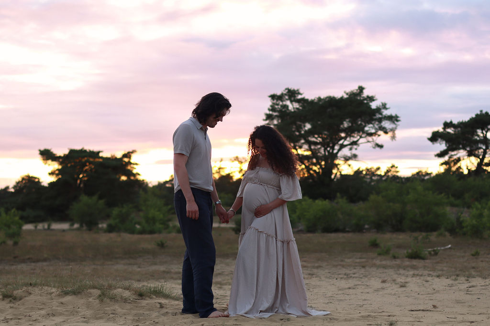
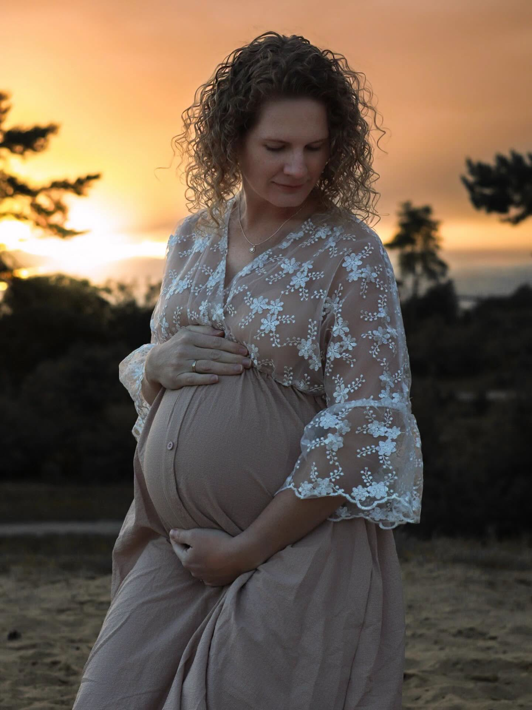
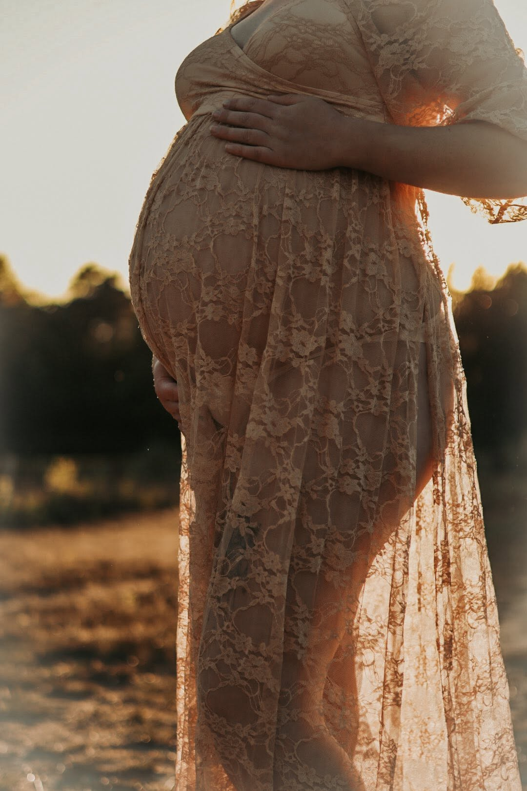

De tijd voor de geboorte is zo uniek, intiem, vol verwachting en soms ook gewoon heel spannend. Met een zwangerschapsshoot leg ik die mooie periode vast, of dat nu alleen is, samen met je partner of met de grote broer of zus erbij.
Geen ingewikkelde poses, gewoon echte momenten. En maak je geen zorgen over wat je aan moet trekken: ik denk graag met je mee over styling in zachte tinten die mooi bij de sfeer passen.
Want deze periode verdient het om nooit te vergeten.







Elk pakket is hetzelfde. Je kiest simpelweg hoeveel mooie foto's je mee naar huis neemt.
Genoemde bedragen zijn richtprijzen. Neem gerust contact op voor de actuele prijslijst of een pakket op maat.
Een herinnering aan het moment vlak voordat jullie leven voorgoed verandert.
Plan een shoot